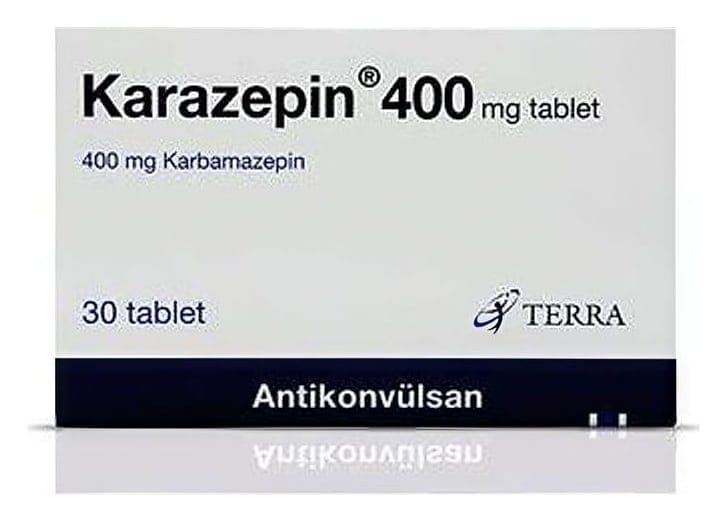

Karazepin 400 mg Tablet, 30 Adet

Ne için kullanılır
KT · Bölüm 1KARAZEPİN, 30 tablet içeren blister ambalajda takdim edilmektedir
KARAZEPİN Tablet, beyaz, yuvarlak ve çentikli tabletlerdir. Çentiğin amacı tableti iki eşit doza bölmektir.
Her bir tablet 400 mg etkin madde, karbamazepin içerir. Tablet içeriğinde inek sütünden elde edilen laktoz bulunmaktadır.
KARAZEPİN antiepileptikler (sara hastalığının tedavisinde kullanılan ilaçlar) adı verilen bir ilaç grubuna dahildir. Etki mekanizması nedeniyle, diğer hastalıklar için de kullanılabilir.
KARAZEPİN belirli nöbet tiplerini (epilepsi, sara hastalığı) tedavi etmek için kullanılır.
Ruh Sağlığı hastalıklarından olan, belli bir ruhsal çöküntü (depresyon) tipinde, çökkünlük ve taşkınlık dönemleri ile seyreden “İki uçlu duygu durum bozuklukları” adı verilen ruhsal hastalığın taşkınlık dönemlerinde (manik epizod) ve beyinden çıkan sinirlerden birinin etkilenmesi sonucunda genellikle bir yüz yarısında şiddetli ağrılarla seyreden bir hastalık olan "Trigeminal Nevralji" adı verilen hastalığın tedavisinde kullanılır. Vücuttaki diğer ağrılar ya da sancılar için kullanılmamalıdır.
Epilepsi iki ya da daha fazla nöbetle (kriz) karakterize olan bir hastalıktır. Nöbetler, beyinden kaslara giden mesajlar vücuttaki sinir yolları tarafından düzgün bir şekilde iletilmediğinde meydana gelmektedir. KARAZEPİN bu mesajların iletiminin kontrol edilmesine yardımcı olur.
KARAZEPİN ayrıca yukarıda bahsedilen diğer hastalıklarda da sinir işlevlerini düzenlemektedir.